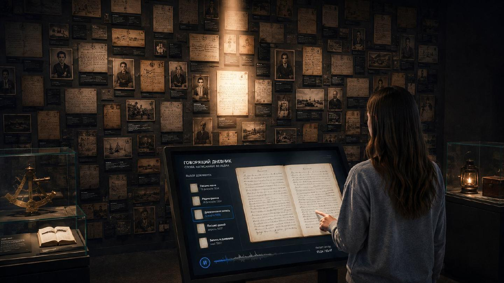
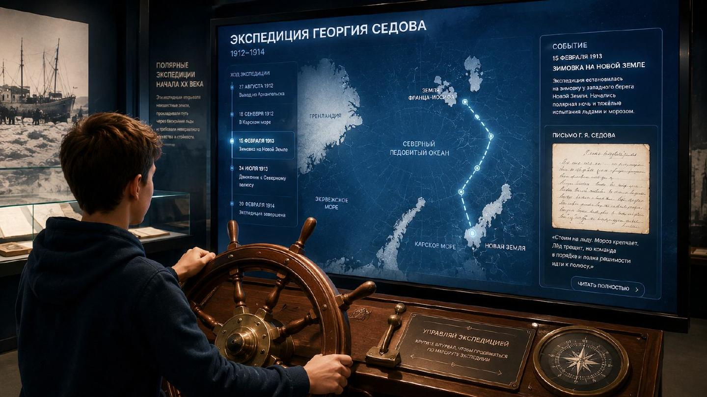

Личная история
Войти → прочитать и услышать письмо → задать вопрос → пройти экспедицию на карте → собрать снаряжение → продолжить маршрут с аудиогидом.
Документ → голос → вопрос → открытие
Общий интерактивный стол, карта экспедиций и рабочая зона соединены одним маршрутом.
Пять сценариев из «Оживших архивов» объединены в компактную экспозицию: три программы на общем столе, отдельная карта со штурвалом и аудиомаршрут дальше по музею.
Это предложение в ответ на обсуждение 8 сентября: где поставить технику, как вести посетителя и с чего начать, если оборудование предстоит приобрести с нуля.
Для этой примерки вся расширенная планировка принята как единая экспозиция. Её границы и проёмы ещё нужно подтвердить с музеем. Здесь показана концепция размещения, а не обмерный или монтажный проект.

Посетитель видит почерк, слышит актёрское прочтение, а затем узнаёт человека и обстоятельства записи. Стена с факсимиле создаёт атмосферу; общий экран помогает смотреть вместе.
На этом же столе можно собрать вопрос полярнику или выбрать снаряжение экспедиции. Меняется программа, мебель остаётся той же.
Время и размер групп — предложение для первого пробного показа. Длительность уточняется после теста с посетителями.
Войти → прочитать и услышать письмо → задать вопрос → пройти экспедицию на карте → собрать снаряжение → продолжить маршрут с аудиогидом.
Общее вступление — 5 минут. Две подгруппы по 3 человека меняются между столом и картой: два подхода по 10 минут. Общий финал — 5 минут.
Класс делится на подгруппы. Параллельное занятие в других залах нужно согласовать; вместимость здесь предварительная.
Хранитель встречает исследователя. Два места дают доступ к цифровым копиям, складной стол служит для обсуждения. Посетительские программы в это время выключены.
Габариты ниже — принятые объёмы для примерки. Модели устройств, конструкция мебели, питание и крепления определяются после обмеров.
1 наклонный дисплей в корпусе 1,20 × 0,70 м, высота около 0,95 м; 1 экран на стойке, условно 55″; 1 медиакомпьютер и наушники. Поле просмотра перед столом используется всеми тремя программами по очереди.
1 экран, условно 55″; 1 штурвал на стойке 0,55 × 0,55 м; датчик вращения, контроллер и отдельный медиакомпьютер. Развитие после пилота: в первом запуске карта доступна на общем столе.
Стойка 0,55 × 0,40 м у входа. Для пилота — выбор готового маршрута на личном телефоне по QR-коду. Позже — выдача музейных плееров с зарядкой; их количество зависит от посетительского потока.
В модели: 6 комодов высотой 0,90 м: 3 по 1,00 × 0,60 м и 3 по 0,85 × 0,60 м и 2 шкафа 0,75 × 0,45 × 2,10 м. Мебель предполагается запираемой, опечатываемой и светонепроницаемой, с защитой по требованиям хранителя. Это резерв объёмов. Вместимость под 50 000 бумажных предметов и до 200 приборов пока не рассчитана: нужны форматы, упаковка и состав коллекции.
1 место хранителя 1,25 × 0,60 м; 2 места посетителей по 0,95 × 0,55 м с компьютерами; стол-трансформер 1,40 × 0,70 м, в сложенном виде — 0,70 × 0,70 м. Переговоры и групповой показ проходят в разное время.
Розетки рядом с каждой станцией, локальная сеть, доступ для обслуживания и согласованный кабельный канал вдоль стен. Свет для факсимиле и мобильное затемнение окон входят в проект. Трассы и электрические нагрузки проверяются по выбранному оборудованию; монтаж к историческим поверхностям отдельно согласуется.
Карта даёт действие второй подгруппе, пока первая работает с документом. Остановка экспедиции раскрывает связанную запись, фотографию или событие.

В 3D показан целевой компактный комплект. Его можно собирать поэтапно: сначала проверить интерес посетителей, затем добавлять технику и программы.
Общий экран, компьютер, небольшой пульт или планшет для выбора, наушники и факсимиле. Несколько проверенных документов и готовая озвучка. Карта и вопросы работают здесь же, по очереди.
Наклонный большой дисплей можно добавить позже. Хранение и рабочие места планируются отдельной обязательной частью.
Наклонный тач-стол, второй экран со штурвалом, программы для подгрупп. Единая библиотека контента связывает письмо, карту и снаряжение.
Именно этот этап представлен в модели.
Выдаваемые аудиогиды, новые истории и цифровой портал. «Лёд говорит» — самостоятельный следующий модуль после согласования программы и его места.
Состав этапов можно использовать для обсуждения грантового финансирования.
Стоимость здесь не заявлена. Для сметы нужны коммерческие предложения на технику и мебель, оценка оцифровки, сценариев, разработки, озвучки, монтажа и ежегодного сопровождения.
Подтвердить весь используемый контур, действующие входы, ширину проходов и доступность. Провести обмер и пробную расстановку в натуральную величину.
Вместе с хранителем определить форматы и число ящиков. Проверить выдвижение, подход и режим работы; если объёма недостаточно, пересмотреть расстановку или распределить хранение.
Выбрать тему, документы и длительность посещения. На стене предполагаются факсимиле; обращение с подлинниками и условия освещения определяет музей.
Выбрать стартовый набор, согласовать питание и крепления, запросить смету. В пилоте ответы готовятся и проверяются заранее; развитие ИИ-поиска требует отдельной работы с архивом и ссылок на источники.